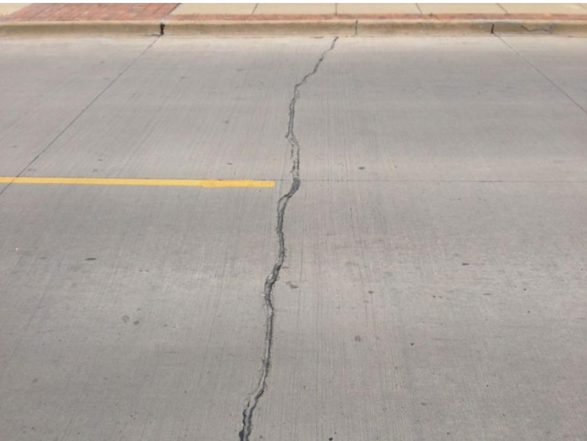
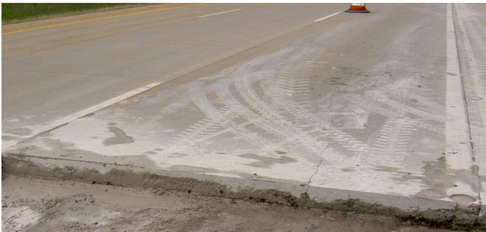
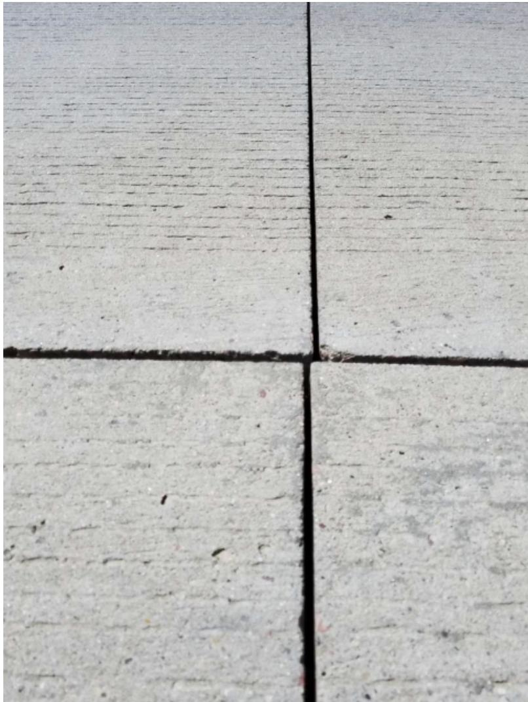
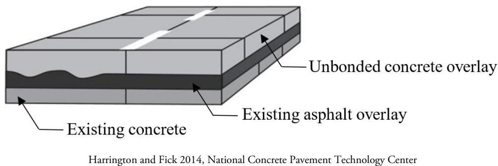
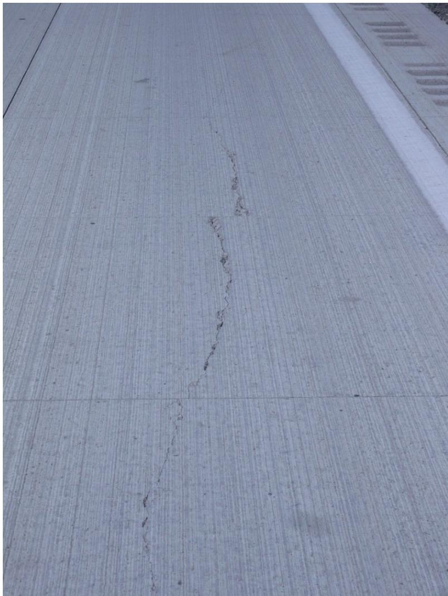
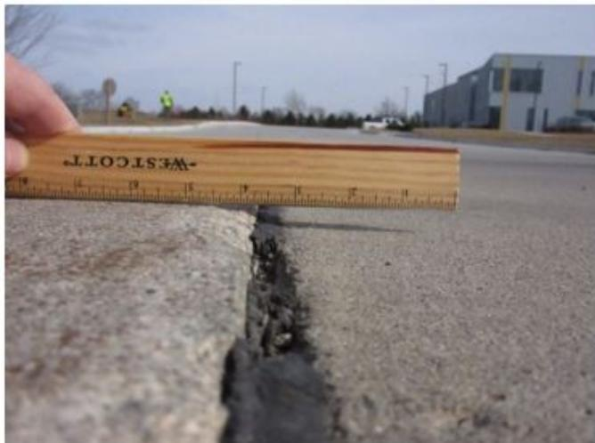

Material/Chemical Factors in Pavement Distress
Material/Chemical Factors in Pavement Distress refers to the suite of material‑related performance problems that appear as cracking, faulting, and loss of structural integrity in concrete airfield pavements and thin unbonded concrete overlays (≤ 6 in.). Its purpose is to evaluate these distresses—such as D‑cracking, map cracking, alkali‑silica reaction, random slab cracking, and conventional faulting caused by inadequate load transfer, excess fines, or water intrusion—in order to pinpoint underlying causes (e.g., non‑uniform support, poor construction, design deficiencies) and to guide preventive or remedial actions that stop further deterioration rather than merely repair existing damage [1][2]. The assessment works through a multi‑step inspection regime that combines visual distress surveys, drainage evaluations, coring, laboratory testing, and nondestructive methods to identify the material or chemical mechanisms driving the observed faults and to locate where treatment is required [1].
Sources (3)
Purpose and treatment objectives
Material/Chemical Factors in Pavement Distress is intended to address a suite of material‑related performance problems that appear as cracking and loss of structural integrity. It targets material‑related cracking such as D‑cracking, map cracking and alkali‑silica reaction (ASR); random cracking—including longitudinal, transverse, diagonal or shattered slabs—and the associated roughness that result from settlement or heave; faulting in unbonded concrete overlays caused by insufficient load transfer, excess fines and water infiltration (often preceded by panel movement due to stripping or shear failure of the underlying HMA); and bond failures in overlay systems leading to stripping, delamination or loss of adhesion. [1]
The figure below illustrates examples of transverse and diagonal cracking in concrete pavements.

Transverse and diagonal cracking in concrete pavements [1]The image displays a section of gray concrete pavement featuring a prominent, irregular crack running vertically through the center. A yellow painted line intersects this vertical fracture at an oblique angle, visually demonstrating diagonal cracking oriented across the slab. This visual evidence illustrates transverse and diagonal cracking, which are distinct fractures that typically extend through the entire thickness of the slab.
[1] — Ch. 4 (pp. 82–327), Ch. 18 (pp. 357–453)
Across the guides, the objective of assessing material/chemical factors in pavement distress surveys is twofold. First, “The purpose of evaluating material‑related cracks is chiefly to keep the pavement from deteriorating further” by pinpointing underlying causes—such as nonuniform support, poor construction quality, or design flaws—and applying appropriate prevention measures that aim to “stop new distress formation rather than merely repair existing damage.” Second, the surveys are intended to “Identify repair areas and repair quantities” and to “Gain insight into causes of deterioration (e.g., structural versus functional versus material)” so that treatment alternatives can be selected that restore function and prolong service life. [1][2]
[1] — Ch. 4 (p. 329); [2] — Ch. 3 (p. 43)
Distress characterization and causes
The material-related cracking described occurs throughout the concrete pavement, often appearing near the edge or close to a sawed longitudinal joint where support is non-uniform. The distress initially manifests as closely spaced transverse cracks bounded by the edge and a longitudinal crack, creating a bounded area that eventually faults or punches into weak underlying layers under repeated heavy loads. As the concrete displaces, the embedded longitudinal steel can yield or rupture, breaking its continuity and indicating a severe loss of structural integrity. This progression compromises the pavement’s load‑transfer capability and can lead to ongoing safety and operational problems as the reinforcement no longer functions as intended. [1]
The following figure illustrates how these material-related distress mechanisms manifest as transverse cracking driven by volumetric changes.
 Transverse cracking in a concrete pavement slab caused by volumetric changes. [1]
Transverse cracking in a concrete pavement slab caused by volumetric changes. [1]
The image displays a concrete road surface featuring a prominent transverse crack that extends across the width of the lane, intersecting with other longitudinal and transverse joints. This visual evidence illustrates transverse cracking caused by volumetric changes, which can be due to both concrete mixture properties and environmental effects.
[1] — Ch. 4 (p. 329)
Distress in UBCOA pavements is driven primarily by insufficient evaluation and design, inadequate structural capacity, poor construction quality, and adverse material‑chemical interactions. When existing conditions are not properly assessed, overlay thicknesses are undersized for the actual traffic loads, leading to load‑related cracking (“Load-related cracking due to inadequate overlay thickness”). Non‑uniform pavement support and weak underlying layers—often caused by stripping or shear failure of the hot‑mix asphalt interlayer and excessive fine particles—produce differential movement that manifests as faulting and panel movement. Conventional faulting is accelerated by lack of load transfer, excessive fines, and the presence of water (“Conventional faulting caused by lack of load transfer, excessive fines, and the presence of water”). Poor drainage allows water infiltration and pressure buildup, which can cause pumping or faulting at transverse and lane‑shoulder joints, indicating loss of support beneath the slab. Inadequate ditches, deteriorated edgedrains, and blocked outlets further impede runoff, allowing moisture to remain in the pavement system (“Presence of pumping and/or faulting at transverse joints or lane‑shoulder joints”, “Depth of ditch compared to pavement profile grade”, “Condition of edgedrains and their outlets”). Construction shortcomings such as poorly placed longitudinal joints under wheel paths, improper tie‑bars or dowels, and substandard finishing practices create stress concentrations that exacerbate cracking. Environmental exposure, especially highly evaporative conditions, can intensify chemical reactions such as alkali‑silica reaction, initiating early map cracking (“highly evaporative conditions”). Together these mechanisms—water infiltration, drainage failure, inadequate structural capacity, weak support, material aging and chemical reactions, poor construction, and heavy repeated loads—accelerate the observed distresses. [1][2]
The figure below illustrates concrete pavement joint faulting, a distress mechanism accelerated by water infiltration and inadequate load transfer.
 Concrete pavement joint faulting [1]
Concrete pavement joint faulting [1]
The image displays a close-up view of a transverse crack in a concrete surface where the two slabs are misaligned vertically. A wooden ruler is held horizontally across the joint to visually demonstrate the difference in elevation between the adjacent panels, known as faulting.
[1] — Ch. 4 (pp. 82–329), Ch. 18 (pp. 357–453); [2] — Ch. 3 (p. 43)
Applicability and treatment selection
Material/chemical factors are appropriate to evaluate on concrete airfield pavements and on unbonded concrete overlays (both UBCOA and UBCOC) that are thin (≤ 6 in.). The distress becomes material‑related when the pavement lacks adequate load transfer, contains an excess of fine particles, and is subjected to water or high moisture conditions. In airfield settings this includes cases where alkali‑silica reaction (ASR) is a recognized distress and map cracking appears under highly evaporative conditions or poor finishing practices. For thin overlays, conventional faulting may be further aggravated by panel movement caused by stripping or shear failure of an underlying hot‑mix asphalt layer, indicating that substrate condition also triggers material‑related distress rather than traffic loading per se. [1]
The figure below illustrates how water intrusion leads to the erosion of the underlying hot-mix asphalt layer, resulting in stripping and longitudinal cracking.

Erosion of asphalt due to water intrusion, stripping, and erosion of the HMA, causing a longitudinal crack in the wheel path of a UBCOC [1]The image displays a concrete pavement surface featuring a prominent longitudinal crack running parallel to the lane edge. Surrounding the crack, the concrete exhibits extensive white staining and texture loss consistent with stripping or scouring of an underlying hot-mix asphalt layer due to water intrusion.
[1] — Ch. 4 (p. 82), Ch. 18 (pp. 423–453)
Material or chemical factor assessments are unsuitable when the observed distress is not caused by load‑transfer deficiencies, excess fines, water intrusion, or insufficient overlay thickness, but instead originates from settlement/heave, poor underlying asphalt condition, thin overlays (< 6 in), stripping of the HMA separation layer, shear failure, or other mechanisms. In such cases the standard severity ratings and faulting classifications do not apply; practitioners must identify the likely cause, quantify differential movement and distress extent, and select an alternative maintenance, preservation, rehabilitation, or repair strategy (e.g., slab replacement, base reconstruction, proper joint placement, pre‑overlay repairs). The guides note that “Settlements and heaves are not characterized according to the Distress Identification Manual for the Long Term Pavement Performance Program (Miller and Bellinger 2014)” and that “In general, the severity of settlements and heaves are not reported.” They also state that an overlay is inappropriate when there is “at least 3 inches of sound asphalt” missing or when “Conventional faulting caused by lack of load transfer, excessive fines and the presence of water” is absent. Thin (less than 6 inches) UBCOC pavements not attributable to those mechanisms, panel movement resulting from stripping of the HMA separation layer or shear failure, and failures in the asphalt layer such as “Failures in the asphalt layer (e.g., stripping, delamination, etc.)” likewise preclude a material‑chemical preservation approach.
Furthermore, when the distress survey reveals high severity that would likely exceed the performance limits of preservation, the guides advise shifting to more extensive rehabilitation. The surveys should document type, quantity and severity of defects, and include a drainage survey if moisture is suspected; signs such as pumping, faulting at joints, inadequate ditch depth, or poor edge‑drain condition indicate that “more severe distresses may preclude preservation and instead require more extreme rehabilitation measures,” prompting a move from preservation to more aggressive corrective actions. [1][2]
The following figure illustrates how adding a longitudinal edgedrain can improve granular base drainability to address moisture-related distresses.
 Diagram of a longitudinal edgedrain installation reducing the flow path within the granular base. [2]
Diagram of a longitudinal edgedrain installation reducing the flow path within the granular base. [2]
The figure illustrates a cross-section of pavement layers, showing water flowing through the granular base towards an outlet pipe installed at the edge.
[1] — Ch. 4 (p. 295), Ch. 18 (pp. 357–453); [2] — Ch. 3 (p. 43)
Condition assessment and timing
To assess whether material or chemical factors are causing pavement distress and to locate where treatment is required, the guides prescribe a multi‑step inspection approach. First, a visual pavement‑distress survey is performed as the initial inspection, documenting type, severity and extent of surface defects; this aligns with conducting a standardized pavement condition survey in accordance with ASTM guidelines and referencing the Distress Identification Manual to locate D‑cracking and map cracking. Severity of these cracks is quantified using the measurement methods outlined in Table 4.1 for D‑cracking, map cracking, and ASR, recognizing that map cracking can signal early alkali‑silica reaction (ASR) and thus help prioritize remediation. If moisture or related issues appear to influence the observed defects, a drainage survey is added to note ditch depth, condition, profile and any pumping or faulting at joints, as well as to evaluate drainage conditions around overlays.
A targeted visual field survey of unbonded concrete overlays follows, checking joint placement, tie‑bar sizing, drainage conditions, and the location of load‑transfer dowels. Suspect locations are then cored to verify as‑built overlay thickness and assess the condition of the underlying hot‑mix asphalt (HMA) interlayer; core results can reveal stripping, shear failure, or other material deficiencies that dictate where treatment is needed.
Finally, observations from these surveys are linked with material sampling and laboratory testing, together with nondestructive testing (NDT), to evaluate whether problems such as water intrusion, fines accumulation, or inadequate load transfer are contributing to the distress and to pinpoint the exact locations for remedial action. [1][2]
[1] — Ch. 4 (p. 82), Ch. 18 (p. 442); [2] — Ch. 3 (p. 43)
When faulting becomes apparent in an unbonded concrete overlay—especially in thin overlays under six inches thick—the material and chemical factor assessment should be applied. At this stage the distress is tied to conventional faulting mechanisms such as inadequate load transfer, excess fines, and moisture intrusion, or to panel movement caused by stripping of the HMA separation layer or shear failure in the underlying HMA, which often precede or accompany the faulting. [1]
The figure below illustrates how such mechanisms manifest as faulting and panel movement in a concrete overlay.

Transverse joint faulting in a concrete overlay panel. [1]The image displays the intersection of transverse and longitudinal joints on a concrete pavement surface, where visible vertical displacement indicates faulting at the corners. This visual evidence corresponds to conventional faulting caused by lack of load transfer or panel movement resulting from shear failure in the underlying HMA layer.
[1] — Ch. 18 (p. 453)
Materials and repair details
The prescribed remedy for material‑ or chemical‑induced distress in UBCOA pavements is to remove the affected concrete slab(s) and replace them with new concrete, while also remediating any compromised support layers. When an unbonded concrete overlay is used, it must be installed at a thickness that prevents load‑related cracking; the guidance limits the overlay to six inches or less and requires a minimum of three inches of sound underlying asphalt before placement. Joint configuration is critical: longitudinal joints shall be kept out of wheel paths and transverse joints should align with existing thermal cracks in the asphalt surface. No particular product brand or mix design is mandated beyond these dimensional and configurational criteria. [1]
The figure below illustrates an unbonded concrete overlay applied to existing composite pavement.

Cross-section of an unbonded concrete overlay on existing composite pavement layers. [1]The figure displays a three-layer cross-section consisting of an existing concrete base, an intermediate asphalt layer, and a top unbonded concrete overlay.
[1] — Ch. 4 (p. 327), Ch. 18 (pp. 357–424)
The guides indicate that material‑related distress treatment performance hinges on three interrelated factors – concrete quality, support conditions, and overlay compatibility. Concrete must meet design strength, stiffness, and mix specifications; otherwise longitudinal, transverse cracks and punchouts increase. The ability of a CRCP to resist material‑related cracking depends on the condition of its support layer, the intrinsic properties of the concrete, and how closely the as‑built pavement reflects the design assumptions. Uniform, adequate support prevents differential settlement and panel movement, while proper drainage and correctly sized load‑transfer devices are required for overlay compatibility; thin sections or excessive fines accelerate faulting. Faulting in unbonded concrete overlays is influenced by material characteristics such as inadequate load transfer capability, excess fine particles, and moisture presence, all of which can degrade performance. The effectiveness of an unbonded concrete overlay also depends on the condition and thickness of the existing asphalt pavement, the ability of the new layer to develop a reliable bond with that surface, and providing sufficient overlay thickness for anticipated traffic loads. When moisture is suspected, drainage surveys evaluate ditch depth relative to pavement grade, ditch condition, irregular longitudinal or transverse profiles, pumping or faulting at joints, and edge‑drain condition, as these existing pavement conditions can exacerbate chemical or material deterioration. [1][2]
[1] — Ch. 4 (pp. 82–329), Ch. 18 (pp. 357–453); [2] — Ch. 3 (p. 43)
Treatment procedures
The primary environmental condition influencing material‑related distress in UBCOA overlays is water; its presence, together with inadequate load transfer and excess fines, promotes conventional faulting. The source does not discuss any specific equipment, construction sequencing, or traffic control measures required to address these chemical or material issues. [1]
[1] — Ch. 18 (pp. 423–424)
Quality and workmanship
Inspectors should evaluate the existing pavement support conditions and concrete material properties, reviewing original design assumptions against as‑constructed characteristics to identify any deficiencies in material quality, preparation, or installation. The overlay thickness must be verified to meet design traffic demands and provide at least three inches of sound underlying asphalt before placement. Joint locations are critical: longitudinal joints must not be placed in wheel paths, while transverse joints should accommodate existing thermal cracks and function properly. Load‑transfer devices such as dowels and tie bars need to be the correct size, correctly positioned, and effective. The concrete mix should contain only permissible amounts of fines, and water intrusion into the pavement system must be ruled out. A satisfactory bond between the new overlay and the underlying surface should be confirmed, with checks for stripping or delamination in the asphalt interlayer. Drainage provisions must be examined to prevent loss of support that could lead to stripping of the HMA layer. Finally, field surveys and coring should detect any panel movement that may indicate shear failure or stripping of the underlying hot‑mix asphalt, conditions that often precede faulting. [1]
[1] — Ch. 4 (pp. 325–326), Ch. 18 (pp. 357–442)
A satisfactory material/chemical condition for an unbonded concrete overlay is confirmed when the existing asphalt substrate meets the minimum thickness requirement of three inches of sound material, as recommended, and the overlay thickness is sufficient to accommodate the actual traffic loads. Additionally, proper pre‑overlay repairs must address any thermal cracks and locate longitudinal joints away from wheel paths, ensuring adequate bond development with the underlying surface. These criteria serve as indicators that the overlay will perform without load‑related cracking, joint placement issues, or delamination. [1]
[1] — Ch. 18 (p. 357)
Performance and service life
Material‑related chemical reactions such as alkali‑silica reaction (ASR) may appear as map cracking, yet when the cracking originates from highly evaporative conditions or poor finishing practices it “does not present any major performance issues” and therefore has only a limited effect on overall pavement condition, functionality, durability, and service life. Conversely, settlement‑ and heave‑induced movements generate random cracking and surface roughness that directly impair visual condition and ride quality. Because “any appreciable slab movement results in nonuniform pavement support,” the structural functionality is compromised, load distribution deteriorates, and accelerated deterioration follows. Excessive fines, water infiltration, or inadequate load transfer in unbonded concrete overlays give rise to conventional faulting; the report notes that “Conventional faulting caused by lack of load transfer, excessive fines, and the presence of water …” degrades smoothness and structural integrity, reducing functional performance and hastening loss of durability. Inadequate drainage that allows water to strip the hot‑mix asphalt interlayer removes essential support; as described, “Loss of support due to inadequate drainage resulting in stripping of the hot mix asphalt (HMA) interlayer” leads to panel movement, shear failure, further condition decline and a shortened expected service life. Overall, material/chemical factors range from negligible impact when limited to map cracking, to severe reductions in pavement condition, functionality, durability, and anticipated service life when they cause settlement/heave or faulting mechanisms. [1]
[1] — Ch. 4 (pp. 82–295), Ch. 18 (pp. 423–442)
Material‑related distresses that dominate UBCOA and unbonded concrete overlay systems fall into three recurring categories: (1) faulting, (2) cracking of various forms, and (3) punchouts. Faulting is the most frequently observed failure in thin overlays (≤ 6 in.) and arises when load‑transfer mechanisms are inadequate, fine particles accumulate, or moisture penetrates the pavement structure. “Conventional faulting caused by lack of load transfer, excessive fines, and the presence of water” captures this primary mechanism. Cracking manifests as D‑cracking, map cracking, random longitudinal, transverse, diagonal, or shattered‑slab patterns, and is often linked to differential slab movement, insufficient support, or chemical reactions within the concrete. “Map cracking is often an early sign of ASR but can also develop from highly evaporative conditions or inadequate finishing practices” illustrates how both material chemistry and construction/environmental factors drive crack initiation. Moreover, any appreciable slab movement creates uneven support that propagates these cracks: “any appreciable slab movement results in nonuniform pavement support.” When a network of longitudinal and transverse cracks coalesces under repeated heavy traffic, punchouts may develop; they require sustained loading on locally weak zones: “Punchouts … require high repetitions of heavy loads and localized poor support conditions.” The development of each distress is therefore governed by a combination of material properties (ASR potential, concrete quality), design assumptions (overlay thickness, joint placement), construction execution (finishing, dowel alignment), traffic intensity, and moisture‑related degradation of the underlying hot‑mix asphalt or base layers. [1]
The figure below illustrates how moisture infiltration can erode the underlying asphalt layer, leading to longitudinal cracking within the wheel path.

Longitudinal cracking in a concrete overlay caused by erosion of the underlying asphalt due to water intrusion. [1]The image displays a concrete pavement surface featuring a prominent, irregular longitudinal crack running vertically through the wheel path. This distress is caused by stripping or scouring of the asphalt due to the combination of poor drainage of the asphalt and heavy truck loading. The figure illustrates how moisture-related degradation of underlying layers leads to nonuniform support, which is a primary material factor in pavement distress.
[1] — Ch. 4 (pp. 82–329), Ch. 18 (pp. 357–453)
Monitoring and follow-up
After the remedial work for material or chemical related distresses is completed, the area should be examined by conducting field surveys and, when necessary, coring to verify that the previously identified mechanisms—such as inadequate evaluation, load‑related cracking, improper joint placement, tie‑bar deficiencies, drainage loss, nonworking joints, misplaced dowels, or panel movement—have been corrected and are not recurring. These observations provide the primary means of post‑treatment monitoring. [1]
[1] — Ch. 18 (p. 442)
The guides indicate that when a concrete pavement exhibits appreciable slab movement manifested as random cracking (longitudinal, transverse, diagonal, and shattered slabs) and localized or overall pavement roughness, the slab is no longer uniformly supported. Longitudinal cracks developing near edges or sawed joints, especially when accompanied by closely‑spaced transverse cracks bounded by the edge, further signal deteriorating support conditions. Faulting—particularly in thin (< 6 in) unbonded overlays—or any associated panel movement are clear signs that load transfer is insufficient, fines and moisture are excessive, or the hot‑mix asphalt interlayer has been stripped or sheared. Placement of longitudinal joints directly in wheel paths represents a design/construction deficiency that accelerates load‑related cracking. Across sources, Presence of pumping and/or faulting at transverse joints or lane‑shoulder joints together with drainage deficiencies such as insufficient ditch depth or deteriorated edgedrains indicate moisture intrusion and elevate distress severity. Severity—The severity of distress represents the criticality of the distress in terms of progression; more severe distresses may preclude preservation and instead require more extreme rehabilitation measures. When these conditions are observed, additional maintenance, repair, or full rehabilitation is required. [1][2]
The following figure illustrates faulting, a key distress indicator associated with insufficient load transfer and excessive moisture intrusion described above.

A wooden ruler measuring the vertical displacement across a transverse joint in concrete pavement. [1]The image displays a close-up view of a concrete pavement surface where two slabs meet at a distinct gap, with a hand holding a wooden ruler to measure the height difference between them.
[1] — Ch. 4 (pp. 295–329), Ch. 18 (pp. 357–453); [2] — Ch. 3 (p. 43)
References
- D. Harrington, M. Ayers, T. Cackler, G. Fick, D. Schwartz, K. Smith, M. B. Snyder, and T. Van Dam, "Guide for Concrete Pavement Distress Assessments and Solutions: Identification, Causes, Prevention, and Repair," National Concrete Pavement Technology Center, 2018. [Online]. Available: https://www.cptechcenter.org/wp-content/uploads/2019/01/concrete_pvmt_distress_assessments_and_solutions_guide_w_cvr.pdf
- K. Smith, M. Grogg, P. Ram, K. Smith, and D. Harrington, "Concrete Pavement Preservation Guide (Third Edition)," National Concrete Pavement Technology Center, 2022. [Online]. Available: https://www.cptechcenter.org/wp-content/uploads/2022/08/concrete_pvmt_preservation_guide_3rd_edition_web.pdf
- K. D. Smith, T. E. Hoerner, and D. G. Peshkin, "Concrete Pavement Preservation Workshop," National Concrete Pavement Technology Center, 2008. [Online]. Available: https://www.cptechcenter.org/wp-content/uploads/2018/08/preservation_reference_manual.pdf